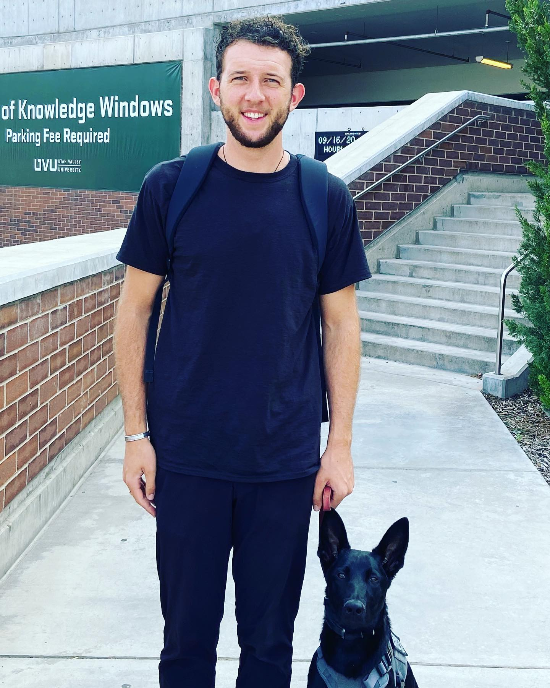

Episode 8 · July 04, 2023 · 3477
Podcast with dog trainer Parker Fillmore

About This Episode
In this episode we talk with Parker Fillmore my cousin's son who has become a really solid dog trainer. He talks about how he got into training and gives some good insight on how to work your dog through some common problems. We also discuss service dogs and some of the cool things they are trained to do. Hope you all enjoy the podcast. If you have questions you would like talked about DM us on instragram at "thebirddogpodcast or to our email
Questions about the training topics in this episode? Tyce works with bird dog owners and hunters through Utah Bird Dog Training. Reach out to work with him directly.
Resources & Links
- Utah Bird Dog Training — Work directly with Tyce — professional bird dog training services in Utah.
Transcript
Full transcript for Episode 8: Podcast with dog trainer Parker Fillmore.
Tyce
Welcome to the Bird Dog Podcast, where we talk about our passion for these awesome animals. The van.
Tyce
All right folks. Welcome to the BirdDog podcast. My name is Tys Erickson. Thanks for joining us today.
Appreciate you spending some time and, listening to our conversation. If you're, comments or have any questions about dogs that you want to ask us, go ahead and jump on there and leave us a comment or DM us. And that's probably how we will, get questions for, future podcasts. And we can do like a question and answer period interested in following us on social media, you can find us on Instagram at the BirdDog Podcast.
And if you have any if you can please, subscribe or follow us on the podcasting platforms. That just helps get the word out there and, allows more people to hear it. Today we got a special guest. my cousin's son, Parker. Is, in town visiting and we just barely got in from, playing with some dogs out in my pond out here in the front yard, some retrievers we breed, filled, bred golden retrievers and he's gonna be getting a dog from us.
And so we were kind of playing with dogs and just talking dogs and dog training and Parker, We'll let him kind of introduce himself here in a minute. He is actually a dog trainer himself, so the fruit doesn't fall far from the tree. That's right. So Parker, welcome to the show today.
Thanks for spending some time with me and, we're gonna have a fun conversation here about dogs. Parker, why don't you go ahead and introduce yourself. Say hi to everyone. Yeah, thanks for having me. so my name is Parker, originally from Sandy, Utah.
So same as Tice here the Utah boys. but recently moved out to Nashville, Tennessee. as a dog trainer and we're training dogs out there from anything from basic obedience, so a lot of those household dogs to service dogs, therapy dogs, canine protection dogs. So yeah, that's what I do for work out there and loving it. Yeah. Cool.
So tell me about your dog background. Did you guys have dogs growing up at all? Or tell me how you kind of got into this thing. I know, I know there was, I can't remember.
It was, was it, I dunno, five years ago you called me and said you picked up that Malmo or, yeah, I can't remember how long ago, but yeah, tell me. Yeah, so I grew up with Great Danes. my dad always had 'em, loved him, had him through high school. They bred him here and there. You know, we didn't really know what we were doing, but we were big dog people And yeah, about five years ago, I got a malua at the same time I was looking at going to med school and, a lot of different aspects to my life.
And I started to look for avenues to gain service hours to go to med school. So after doing some research and having this dog and needing some training, I reached out to a local trainer in the area, dog Training Elite. And they were like, oh yeah, we'd like to help you out and I was like, perfect. I'd love a job, but my schedule didn't run line up with their theirs very well.
Mm-. And I was still, in school full time. Yeah. Working part-time and I had this dog and so I was like, well, I really need help with this.
I was like, do you have any volunteer opportunities? They're like, yeah, of course. Have you heard of the Malua Foundation? And I'm like, no, I've never heard of it.
Mm-. They're like, yeah, you can come volunteer for the Malua Foundation. And so the Malua Foundation is a foundation that places service dogs for veterans first responders, women survivors, and children. sent my application in, got a response pretty quick, and they just said, Hey, would you like to be a puppy raiser? I'm like, sure.
I have no idea what this means. Is this, is this tied to Elite or is this Yeah, so dog training Elite, actually, founded the Malua Foundation. Okay. and now they're partners. Mm-.
So that's, that's kind of the relationship they have. I see. they reached out to me being a puppy raiser, and I'm like, sure. Have no idea what that means. And then they just sent me an email and they're like, Hey, pick up your puppy in three weeks..
I'm like, great. So I went and picked up a eight week old lab, and then started training the mewa that I got and the black lab, simultaneously and, yeah, just started training service dogs here and there through the foundation. Clocked about 3,500 hours training service dogs. And then after that just decided that I love it.
And yeah, move out to Nashville and train dogs full time. So that's cool. so the Mal Ma foundation, they obviously have other breeds that they're doing too. So labs or why, why is it called the Malmo Foundation? Did they start with that breed or was it Yeah, that's a great question.
They started with the Malua Foundation just cuz, mainly started placing service dogs for veterans. Okay. So MAL law is used a lot in the military. I see. but no, a majority of the service dogs, that are placed now are your typical gold golden retriever, Labradors, all that stuff.
Some a little easier to Yep. To manage a little bit more service dog friendly for sure. Do they still do shepherds and malises and stuff like that? Yeah, every once in a while with the foundation for sure.
Yeah. so you've said, yeah, I'm interested in raising a puppy. How long did you have that lab for? What's their program on? Yeah, so they no longer have this program of puppy raising. but when it was around, okay.
I had the dog for eight months. Okay. so getting that dog from, Little basic treat training all the way up to a fully trained tax service dog that we placed with a veteran out in, out in Vernal. So. Oh, that's cool.
Yeah. So did they give you a list of commands that you were supposed to use? Did they give you, I assume they gave you guidelines of Yeah, it was actually sort like, Hey, you gotta. Do this or you gotta socialize 'em, cuz I mean, someone could obviously stick that puppy in a crate and absolutely not do anything with you.
You No. You know, there's a lot of, things that go into service dog training and we'd meet, once or twice a week. Okay. with president of the Malua Foundation and then they would bring in trainers every once in a while. Mm-.
Casey Owens was one of those trainers. She came in and would give us puppy courses on how to socialize puppies, how to build a stable dog, for any type of environment, especially for those service dogs who are gonna be out in public and how to, Prep them for that. That's cool. So they met with you guys twice a week were they like, Hey, you gotta be here twice a week, or were they pretty relaxed?
They're pretty lenient. They're, yeah, I was a volunteer. They a service. Yeah.
Have a volunteer. They're not paying me or anything, so, yeah. yeah, they were like, Hey, we're having this puppy course Tuesday night and, love you to be there. And, I just did everything my power to be there cuz I just, I was passionate about it and yeah. Learning from a lot of experienced people, so, yeah.
That's cool to have that training, that one-on-one. what was the dog's name? The dog's name was Cole. Cole, but is now name is Bubba. They renamed him Baba, so, yep.
How'd that happen?, they just decided that they didn't really like coal and so did the, veteran change it? Yeah, the veteran changed it. Yep. That's cool.
Yeah. did the veterans sign up or something and say like, Hey, I interested in this program, was it more to cope with kind of PTSD type stuff? Yeah. Just have that companion, someone to lean on. Yep.
Absolutely. he was a veteran and applied on the malua foundation.org. okay. We went through his application, and he was a good candidate that fit, mm-. Kind of the dog's personality. Okay.
What the dog was tasked to do. So they still have that foundation. Yep. Yep.
And foundation's still there. Yep. Do you know how many dogs they place?, Ear type thing. It's a lot.
I don't know off the top of my head. but they partner with dog Training Elite and Dog Training Elite is now throughout the country. And so because of that partnership, dog training Elite really focuses on being able to provide the training mm-. For the Malawa Foundation, pro bono throughout the country.. Okay. so, if we have some veterans that are listening and they're interested in getting a dog maybe through the Mal WA Foundation, they can get on their website, is it Malam wa Yep, the malmo foundation.org.
Okay. you'll fill out an application. There's a series of questions that they'll ask you, and they'll find a nearby trainer, kind of if you have a dog currently, if that's going to be a good candidate for you. Mm-. and also. ideas for fundraising. They want to make sure that you got some skin in the game.
So they're gonna give you ideas for fundraising, I believe. Like they have you raise a thousand dollars towards Okay. Your service dog. which is nothing. Which is nothing.
Yeah. The cost of a service dog. Absolutely. Yeah.
I mean, I've heard people have to, raise 20, $30,000 on different service dogs or something like that. So a thousand dollars is, that's a pretty good deal. Yeah, absolutely. Yeah.
So can they bring their own dog, assuming that their dog can pass those temperaments? Right. okay. So there's a series of temperament tests that we'll go through with that dog. and we wanna make sure that it's a really sound dog before. We make that kind of commitment.
Is there a wait list for it I think it depends on kind of your location, where you're located, and where the nearest dog training elite trainer would be in order to help you get on that track. So it just depends on where you're located. so just kind of clarify, so how you say it's throughout the country, how does Dog Training Elite tie into that So if someone contacts this dog training Elite also, or someone will just apply on the mal one foundation.org. Okay. they'll get the application and they'll say, okay, this person lives in Nashville, Tennessee. Okay.
Okay. So then they will reach out to the dog training elite, trainer in. Nashville, Tennessee and say, Hey, we have an applicant for, a service dog. They're looking for this service dog.
They already have a dog, or they don't have a dog. Mm-. They're looking for these tasks to be performed. is that something you're capable of doing? And also timeframe, when would you be able to fit them in your schedule?
So how does the dog trainer get paid? Who pays them? The, the foundation, there is no payment for that trainer. as part of the partnership service. Yeah.
As part of that partnership, the trainer in that area will offer their time pro bono for the foundation. I see. Okay. Okay.
That's pretty cool. That's pretty cool it's a good way to give back being a dog trainer to be able to help, help someone like that. So when you're training those dogs, for that foundation, what do you guys typically. Cover, is it generally basic obedience?
Is there any specialty skills that you're. Trying to train for those veterans or what you find with that. Yeah, absolutely. So we'll start every dog with basic obedience.
Sure. Right. We want a good foundation with that. Yeah. after they pass their, in-home training and they have a good foundation of basic obedience, we'll take them for a public access test.
Okay. that public access test is a pretty intense, test. we'll go to a local Cabela's or Target or where that client, somewhere that accepts dogs based the store or something. Yeah. Not even that accepts dogs because it is a training, service dog in training. It can go anywhere.
Guess it can go anywhere. Okay. Yeah. we just wanna go somewhere where that client typically goes. plugging into their lifestyle, absolute. Seeing if absolutely it's gonna pass the test for their lifestyle.
Absolutely. See that we wanna go to a place where there's food. We wanna go to a place where there's a lot of people. We wanna go to the place where mm-.
There's different textures on floors and different, items on shelves. All of that stuff to just really see how that dog is going to pan out as a service dog. Mm-. Assuming that they pass that test. then we'll start task training that dog.
Mm-. based on the disability of the person. so different tasks go from watch my six, watch my sixes, having the dog, sit between your legs or on your side, just watching your back. that's nice for a lot of people who that's what you call is watching your six. Watching my six. Yep. Is that, is that, what's the six?
That's a good question. So it's like a clock. So if you're, yeah, it's like 6:00 PM is behind you. I see.
Okay. Yeah. So watch my six. So it's just a, so the dog actually between their legs looking behind 'em, looking behind. and if the person gets in with a certain range, the dog will nudge the client to let them know that somebody's approaching from behind.
Mm. but people, PTSD does, is that Exactly, is that an issue? Someone startles 'em from behind or something? Absolutely. Okay.
Yeah. So if somebody's looking at items on a shelf, they have their back torn turns towards an aisle. Mm-. they'll give the dog the command watch. My six dog will go around and just kind of keep an eye on what's going around.
That's pretty cool. Yeah, that's definitely something we don't, do with our gun dogs. And so it's fun, fun to really have you watch by six. I mean, that's the cool thing about dogs.
Is you can have them do so many different tasks that you want to kind of fit your lifestyle. Yeah, for sure. If you want someone to. Watch your six or pick up your duck or whatever it may be.
It, that's, that's the, that is one thing that's that's cool about 'em. So what are some of the other tasks that they Yeah, like you said pick up my duck. You know, so we'll train dogs to pick up somebody's prosthetic. Mm-.
So an amputee from, that's a veteran or a woman survivor or, whatever the case may be we tell the dog like, Hey, go get my leg, and they'll go get it or go get my prosthetic. Mm-. And the dog can bring that over. Mm-. providing support, moly.
So if somebody takes a fall, having that dog be right there, mm-. And they can use that dog to get up off the floor.. they swear a vest or something that they can. Grab my handle or something on top of the vest to pull themselves up or just however, just Yeah. Normally, normally if they're on the floor, they can just use the dog. now if they want help getting out of a chair, of course they'll have that handle and then the dog will pull them forward out of that chair.
Yeah. then if we're looking at different things like deep pressure therapy, people that struggle, with panic attacks and things like that, mm-. Having the dog recognize that and apply pressure, on their legs or on their arms or whatever, best suits that client, really helps them kind of overcome that panic attack with those sensory items, if that makes sense. Mm. Do they find, so they find pressure in certain parts of the body when someone's having panic attack or just that, I guess the presence of the dog being against them helps to calm them.
Yeah. Yeah, for sure. like when someone is in a panic attack, it's, common practice to have them identify things, with their sense. Mm-. Things they can smell, things they can feel, things that they can see.
See this is bringing them back into check Right. Type thing. It's like, okay, this is comfortable for me. I touch my dog and I'm Okay.
Yeah. Thing or it's very grounding for somebody. Yeah. Okay.
Yeah. so just that pressure on their legs can really help them, through that panic attack.. That's cool. That's, what other, anything else that they teach? Any other specialty things?
Yeah, for sure. some veterans, some people with ptsd, people, have trouble going into a dark room. Mm-. So having that dog kind of do a search in the room, make sure nothing's there, turn on the light switch for them. That's super helpful. we have a command called Orbit, that's another one where the dog just makes circles in a crowd around a person to just create space.
People that struggle with crowds. That's pretty cool. Yeah. I'm trying to think what else. do people come to you with like, Hey, these are my problem.
Like on the application I assume is there, like, these are things I need help with, and then, or is that later in the process and I'm sure things come up right. They probably don't think of 'em, but then maybe you guys haven't that experience of like, Hey, we've done this before. Like, hey, if you know, you drop your keys or prosthetic, new things may arise during the training. Do you guys just try to basically, I guess you try to help 'em cover whatever they need.
Right. Let's, yeah, absolutely. The dog is to help make their life easier. Yeah.
And more enjoyable. Absolutely. Like those dogs hopefully should. So yeah.
So it's just taking that dog and as long as the dog has the capability, just training that dog to help that person with that disability. Yeah. a lot of people come to us and they're like, Hey, like I've heard a service dog can really help with P T S D, and I would love to get a PTSD service dog. Mm-. but a lot of 'em aren't quite sure what that looks like or what tasks they need help with. Mm-.
And so just kind of identifying what tasks or what parts of PTSD that they think the service dog can help service them, then we can kind of build off that. Yeah. That's cool. Yeah. it's interesting.
I mean, if you really boil it down and kind of simplify, it's like you're just trained the type dog to do what people need it to do. Absolutely. I mean, ducks or waterfowl hunting upland game hunting. I mean, you need the dog to find a bird or you need the dog to do this or that.
You're just teaching them to. Obviously do what you need them to do. That's, so cool how they are so versatile. You can teach 'em to do so many things.
That's why I think dog training is fun and you can fine tune so many things. We were just out working in my pond and working on some angled entries and dogs not cheating the bank and just these little things like there's not, and I've said this in other podcasts, there's not many animals out there that you can train 'em and do these, these higher level things, you know? And, and I like to listen to other people's podcasts on training too, and, and I think. some of the podcasts I've heard were just, there's so many things that these dogs were finding when it comes to like, detecting cancer and obviously like diabetes and all these things I think we're on, I think we're only on the brink of what they're really capable of sensing I think studies are, are showing that I've heard them detecting prostate cancer and all sorts of stuff that they're smelling or sensing so it's pretty amazing. It's pretty cool.
All the little things, they can do. is there a certain thing you like training the most when it comes? What's your favorite thing about dog training? I guess my favorite thing about dog training, is there a favorite thing? You're like, that's what I like.
I think I really enjoy watching people. See their dog change their life. Yeah. I think that's the biggest thing. whether it's just like seeing that success Yeah.
With the dog, kind of whether it's like, wow, my dog used to bolt out my front door and now doesn't, and they're like, I love my dog, and like, my life is so much better. Mm-. Or it's like my dog alerted to my low blood sugar. Mm-.
And it's like, that's so cool just to watch that connection that the dog has with the person and the joy that a person feels watching their dog work. Mm-. I think for me in any aspect is, is fulfilling. Yeah.
Seeing that I was, when I was asking that question, I was thinking the same thing is just seeing, that success with the clients, and, and being successful handlers and to be able to handle that dog. Training a dog can really change someone's life. You know? I mean, huge I'm sure you see it all the time, but like, Just having a dog untrained or someone not knowing how to handle a dog can cause so much stress in someone's life.
It can be debilitating, you know? Like, I can't even sleep, I can't go anywhere, I can't do anything. I can't have friends over. I'm sure you've heard all these things.
Absolutely. Yeah. What are some of the common struggles that, you hear about or see? Yeah.
You know, you'd be surprised are the most common, I guess. Yeah. You'd be surprised at how many people call you crying, you know? Mm-.
Because they're at their wits end. They're at their wits end. Yeah. You know, their marriage is falling apart.
They can't have anybody over their dog's ruining their life and they care about the dog. Yeah. But they literally don't know what to do. Mm-. and the nice part is, is you know, we go in and we see kind of where the issues are and.
Like this as much as I do, a lot of it has to do with the handler. Mm-. Right? And so it's almost therapy for these people to identify kind of where their weaknesses are.
Mm-. And realize that they actually play a huge factor in how their dog's behaving. Mm-. You know, so when somebody is getting super anxious or you know, Is unsure of how to handle a situation.
Mm-. teaching them the skills on how to handle that stage situation just gives them so much more confidence and the dog can just settle down. Yeah. Yeah. You know, so you get a lot of clients that say my dog is super leash reactive. doesn't get along with other dogs.
Mm-. Barks at other dogs. Why don't you explain when you say a dog is leash reactive, why don't you go into details, tell what that means or, yeah. So leash reactivity on the surface just looks like you have a dog at the end of the leash barking like crazy at either another dog or another human.
Mm-. and a lot of it really has to do with the owner not taking control mm-. Of that situation, the relationship within the owner and the dog. Right. And the owner doesn't know what to do.
Mm-. And so the dog assumes the position of control. Mm-. And unfortunately, most dogs don't know what to do either, and so they resort to just barking and losing their mind.
Sure. but as soon as we give tools to the person and say, Hey, just take control don't let your dog pull you at the end of a leash, you know. Walk on your left hand side keep 'em in that controlled heel. Make 'em sit and let them know that you're in control of the situation. And the dog's gonna realize, oh, I don't have to control the situation.
Like, you've got this under control. I can just be a dog. Yeah. One thing I do like about what you guys do, where you go into the home and train, I do like that cuz there's a lot of issues that are, well, partly environmental and partly they don't know how to train or handle the dog.
Right? And so, I think it's nice to address those issues at the, core. At the core, at the home where they're at. And you know, as much as I do, dogs are very, and if you guys don't know this that are listening, they're very place oriented.
And people to a point were the same. You may go hang out with your buddies and you're all calm and relaxed. And then as you go to church and all of a sudden you're maybe a little bit different because of your environment, because of that new situation. I hear people say all the time like, oh my dog's really good dog.
It listens really well in my kitchen. But then like you just said, you open the front door and the dog's gone. You know? And no matter how many treats you have, the dog's out of there.
And so they are very situational. And so I think it is good. Even though our personal training program is more of a bored and train and we're doing a lot of gun dog work stuff, which obviously can't be done at people's houses. The obedience can, but, but we do all the training and then we and then get the dog trained and transition 'em back.
But it's just a different type of program. Like we do all the heavy lifting, then we show you how to reinforce it now that the dog is trained, where you guys are more going in and saying, Hey, here's your homework, this is what you need to work on. And, and that can be good too, cuz if they have a future dog, hopefully they can also train that dog too. Absolutely.
For that skill set they've learned. So you're kind of double dipping a little bit. Absolutely. Because you're training them more to be.
More of a trainer. It's kind of train the trainer, kind of train the trainer. Yep. And we're more like, Hey, we're gonna do all the training.
Now you got this nice animal that's trained, now we show you how to reinforce it. We don't necessarily teach you the whole training process, like some people just don't have time or they don't, they don't have the time or because of family situation or work, whatever. Like, I don't think I'm gonna be able to fall through and train this dog four or five days a week after you leave or whatever. So I'd rather send the dog to you guys, have it trained up and then come home and then, or when I go hunting and stuff, it's trained up.
Now they still obviously gotta reinforce everything, but, I think there's a place. for definitely in-house training. I do like that. If I had time, it'd almost be nice to go take some of these gun dogs, even go into their homes and train 'em when they're there, you know? But, it's just, but there's only so much time and every little program's different, but For sure. what are some of the other common things you see with people's, dogs in their home that you're working on?
Oh, this is crazy. You know, potty training is a big one. Yeah. Yeah.
It's the number one reason why dogs are surrendered to the Humane Society. Really. so, makes sense. I guess if they're peeing and pooping your house, in the house it's frustrating for people and a lot of people just don't know what to do. And so that's a, huge thing that we take care of.
You guys deal with that too? With them? Yep. Okay.
Yep. potty training, barking, chewing, digging, counter surfing, bolting running around, not listening. I mean, anything and everything. yeah. So when it comes to potty training, they have a habit, you gotta break that absolutely. Habit.
Yeah. And if they're peeing or pooping in the house, and a lot of that too, they'll, they'll recognize that scent or something is scented in the house. Is it pretty hard? Obviously probably depends also the age of the dog and how long they've been carrying that on might make it harder.
Yeah. If you tell someone, like, I always give the analogy people are like, well, can you train an older dog? And, and I'm like, yeah, you can. You can train an older dog.
But you know, if you've gotten up every day at 6:00 AM and you've had this habit of getting up at 6:00 AM and all of a sudden someone tells you to get up at 4:00 AM that might be a little more of a challenge. But you can adjust over time is kind of my analogy I'll give, you know. But with potty training, can you kind of give a brief overview if that's one of the big Sure, yeah. Maybe help someone out a little bit.
Yeah. The biggest thing is schedule, right. Schedule. Okay.
A lot of people just like think, oh, yep, I'm just going to let my dog out, and the rest of the time they have a lot of free time in my house. Mm-. Okay. And that just leads to having the dog having accidents in the house.
You know, if it's unsupervised and it's wandering around it doesn't really have any idea what's going on, and it says, sure, I'll just go to the bathroom here. Yeah. So just having that schedule of like, okay, this is when you're going out, this is when you're gonna the bathroom, and if you're not, you're playing with me and I'm keeping my eyes on you. And anymore, if we're not doing that, we're in a kennel.
Yep. Yeah. And so you're creating that habit. Exactly.
Yeah. We're only giving them an opportunity to go to the bathroom where they can. Mm-. That's what it comes down to.
So if you have the schedule and you're trying to take 'em out and get 'em in, what do you, let's say the dog Tries to go pee and you've been trying to do this schedule thing with them. How do you guys, how do you usually, is there a correction on the dog or do you just do more of the schedule, or what do you guys find? Depends on the age of the dog. Okay. depends on how much the dog knows.
Mm-. Right. That's obviously a big factor. A lot of puppies have no idea.
They really don't. Yeah. So that's why it's really, it's like they're bladder small. Like, I gotta go.
Yeah. They just go. They just go. and we'll just pick up the dog, take it outside, and we just make sure that we're giving that reward. You know, it's a big high prize reward, especially for puppies.
When they go to the bathroom outside, is it more verbal praise or do you use treats, or what do you guys like to do? Whatever the dog will take, whatever gets them the most damped. Okay. Yep.
Do you ever use, like a toy or anything like that? Does that ever come a factor?, we can, oftentimes at those eight weeks though, it's, it's more of just a little kibble or a little treat or just a little pet, you know. Mm-. but yeah, if we're working like a older dog and they've got a lot of drive, sure, I'll throw the ball for 'em. If they go to the bathroom, outside, whatever gets 'em excited.
Yeah. Whatever gets 'em to go. So yeah. So they're thinking, Hey, if I go pee or I go poo out here, I get this.
Yep, exactly. And a positive reward instead you ever tell 'em like I always, just tell people, yeah, you gotta, you gotta be on a schedule. Until they figure it out, They gotta be on a schedule, and then you gotta make it negative. My thought is, Hey, if you're doing this, like, you gotta be like, no or like, just kind of like, that's not okay, you know?
And let 'em know the difference. And then when they go to the bathroom, then give 'em that verbal praise or treats or make a big deal, oh, that a dog and, and try to take 'em to those same places or whatnot. Am I, on track there? For sure.
Yeah. I would say you're on track. The biggest thing is, does that dog know what no means? Yeah.
Yeah. And if the dog doesn't know what no means, then that's where our basic obedience is gonna come in. And we're gonna teach that dog what a yes is. Mm-.
And what a no is. Mm-. And as soon as we see that behavior in the future of them deciding to lift a leg on the couch and we say no, and we mean it, yeah. Dog's not gonna do it.
But that's gonna be a lot different if we're just starting on that first day and we say, no, the dog, and he just keeps lifting his leg don't know what mean, they don't know what a no means. Yeah. So it's just a matter, and I would say that's the biggest thing almost, and you'd probably agree with dog training, is just teaching the dog what yes means. Mm-.
And what no means. Yeah. And it's just trial and error. And we make mistakes and sometimes we run a shoreline or sometimes we alert to a high blood sugar rather than a low blood sugar.
Mm-. And it's just like, that was right, or that was wrong. Yeah. And I think too, with dog training, you're teaching 'em, a language.
And, and what that language with an action is tied to that language. you know, sit means sit or put your bum on the ground. And so, so again, consistency right, with the commands is important. Make sure everyone's using the same commands. And so the dog, obviously you're helping him understand that.
But also in addition to that, they do sense your voice tone. If you're like, no and they're like, whoa. Like that, that doesn't seem like he's seems mad. I think they can sense that.
Absolutely. Just like a mom dog, if her puppies are nibbling her food, she'll, she'll grout and they sense that like, whoa, that energy and kind of that correction and like, hey, that's, that wasn't fun or that was. I didn't like that per se. You know?
And even though they don't understand the command, they can still sense that. Yeah, they can feel that. Yeah. And I think obviously if you're through repetition or through maybe correcting 'em with an eco or whatever correction it may be, they're gonna tie those, tie that together.
But again, it think it's being, and I'll tell clients like, Hey when the dog's going to the bathroom, you gotta use, like use the command that you're gonna say like go potty or go to the bathroom or whatever, as the dog is doing that. And then give 'em that verbal praise. And so what I believe is that, and again, these are things just I've learned obviously from personal experience, training dogs over the year, personal dogs and everything, that when they hear those commands, it becomes almost like a muscle memory. And like it just becomes muscle memory and like their brain almost like, okay, I can relax, I go to the bathroom.
Yep. And so they almost do conditioned response. Do it on, yeah, they do it on cue. Yep.
It's like, Hey, go to the bathroom. Like, okay, this is where I go. This is where. it's scented so, I've had people also ask me, I don't know if you guys do anything with this. Some people are like, Hey, I want to, I want my dog to pee in this area of my yard, or poo in this area of the yard, but I don't want it to touch this area of the yard.
If someone has that question, how do you address that? Yeah, I'd say absolutely it's possible. Okay. But I'm just gonna say, It's gonna take a lot of work.
Yeah. Yeah. It's gonna take a lot of work to just get that down. I'd say the biggest thing is like, if you really want that, I would just build a gravel square box in the backyard and the dog knows only to go to the bathroom on the gravel.
Mm-. Something that's obvious. Obvious. The change, elevated, fill in the ground and everything.
They're sense already there. And they don't have an opportunity to go to the bathroom anywhere but that gravel. Mm-. And if they go to the bathroom in the gravel, obviously you're gonna give them that.
Yes. And if they go to the bathroom anywhere else, you're gonna give them that. No. Yeah.
And just it, it's just a matter of how much time mm-. You're willing to dedicate to it. Yeah. Yeah.
I think with our lifestyles, that's the hard thing we're all so busy, you know? and it's just what you want. Right. Absolutely. And you know, you gotta draw that line in the sand and.
And say, Hey, this is, the way it is. There's no other way. And that's gonna be very black and white for 'em. And that's gonna be easier for that dog to understand.
But if you let 'em play in the gray area, that's where they get in trouble. And that's, and you can't really be mad at 'em when they play in the gray area cuz it's really your fault. it's actually, super unfair to the dog at that point. Yeah. It's unfair.
It's like if the dog jumps on you and you're in your church clothes and he gets mud all over you and you're all pissed off cause he jumped on you, but, you let him jump on you the day before. That's unfair. That's plain tonight grayer. And you're just being inconsistent.
So like I told you, if you don't want your dog jump on, you never let 'em jump on you. Right. don't pet 'em. Don't praise 'em. Don't reward 'em if they're jumping on you and then, and then most likely they're not gonna jump on you cuz they know that expectation.
You know? So do you have any fun stories or is there certain dog that stands out to you? They're like, That was a crazy dog. Or, or, let's hear some, I don't know.
You've obviously been meeting with a lot of clients. Is there one that stands out that's like, wow, that was either cool or that dog was crazy, or, I don't know, something along those lines. Yeah, I think there's, a lot of really cool moments. we have a client who struggles with, severe anxiety and PTSD and we're training a golden retriever for her for that. mm-. And she struggles a lot with social anxiety.
Mm-. And a lot of our training, we do group training at a park, that's with other people. Other people are watching you and your dog. You know, her dog's not perfect.
It's still in training and so that causes a lot of anxiety for her. Sure. but it's just really cool to watch how dedicated she is to the service dog. And there's been a couple of times at group class where she has a panic attack in the middle of group class, and sits on the floor. And to watch her dog start to task for her in group class as she's having that panic attack and just watch that bond, I think is.
Super rewarding. Yeah. for sure. Just that relationship that the dog's tasking for her and that she is willing to put herself out there. Mm-.
And after she had her panic attack, she stood back up and she still proceeded to work through the entire group class. Yeah. So I'd say the ad is just like, so fun. Yeah.
So fun to watch. Yeah. That's, that's cool. Yeah. let's talk about aggression.
Yeah. Because I get common, Hey, do you guys do aggression? And I'm like, oh, we're Utah Bird Dogs training. it's not my forte. I've worked with some dogs, the aggression, some dogs can turn it off.
Some that I've worked with a little bit. again, I'm not gonna say I'm an aggression pro trainer, but, I feel like I get the concepts and I feel like some snap out of a lot quicker than others. But I dunno. what's your take on aggression? Yeah. depends on the dog, you know. True, true, true aggression and true dominance of a dog is actually pretty rare.
Mm-. But probably like 2% of dogs that are not gonna back down. Yeah. Uhhuh.
Exactly right. No matter who you are, what you are, no matter what you do to them, they're the baddest boy on the street. Yeah. They're still there.
And you know, there's just certain safety and there's certain dogs that really just won't turn the corner. Mm-. That's the reality. But a majority of time, as soon as you start implementing that basic obedience and you start controlling the life giving.
Yep. Giving dogs are pack animals, they like to be told what to do. Mm-. And as soon as you tell that owner, Hey, tell this dog to sit, tell this dog to be quiet.
Tell this dog that that behavior is not okay. The dog's like, oh, okay. This makes sense. Yeah.
They fall into place in the pack. Yeah. it's really hard on the owners. To do that because they've treated their dog like a fur baby. Mm-.
For the last two years. And every time it barks or every time it growls at somebody, they bend down and start Pet it. Yeah. so what are you saying there? We're just saying you're rewarding the behavior.
You're, yep. You're rewarding the bad behavior. And that's a human thing. Right.
And like a dog. Or a kid or something like, oh, they're trying to calm them. Yeah. Is what they're thinking half the time.
Right, exactly. I was at a vet's office and this lady walked in and she had this little, I think a cocker spaniel and the dog was in her arms and just barking and ground at everyone. She had it in her arms. She could tell she couldn't trust it cuz she was just nervous.
This dog just. You could tell. I just own the place, what she's doing. She's sitting there.
Every time he's barking out, she's petting him like, oh, good boy, it's okay's. Okay. So that dog's like, oh, and I talked about this in a podcast, like the power of touch. Like, we don't realize a lot of times that physical touch, you're, you're basically saying like, it's like giving him a treat.
You do this behavior, I pett you. And so she's just rewarding that behavior and I'm just like, oh, you're you're killing me here. Like, I just want to go say something I didn't, I probably should have. I said, I'm a dog trainer this is what you need to do.
But, and I think a lot of this stems down to it, and I always repeat it. It's just, we as, as humans, we talk to dogs in human language. We, we think they're humans. Yep.
You must remember they are a dog and they're a predator and they're a canine and they live in our house and they are a pack animal. Absolutely. And, and that leadership has to be there. And if.
And if if we're, if we're a weak leader, the dog's gonna sense that and they're gonna become the leader. And that's when they do what they want. They pee on stuff. They do they just run the roos.
And I remember I was watching a Caesar lawn video, and there was a couple of these great danes, and there was sitting on these people's couch and the house was like, destroyed, or, and Caesar comes in and they're like, these dogs are, they're like, we can't get 'em to do anything and they won't move, you know? And, and so, and so Caesar just kind of walks ups like, Hey kind of snapping his finger and the dog's like, oh, who is this guy? Like, jump off the couch and like, you're amazing. You know, and he's just, he just kind of took control, you know?
Absolutely. You know, and they didn't, and they didn't know. And I feel, to be fair to people, again, they don't really know how to take control. Yeah.
And I think that's where you probably step in her eye as a trainer. Trainer. It's like, we're gonna show you how to take control and how to be a leader and how to show this dog. And when you have someone that's.
Like us that's been through the process or through the flames or through the fire. You know, it's, they obviously, they trust you or they trust me, like, Hey what you're doing now, you can guide me. And then, but it's fun when they start seeing like that little success, like, they're like, whoa, this is amazing. It works.
You know? It's a miracle. Yeah, it's a miracle. It's, you've been here for an hour and I've Christmas miracle.
Yeah. I mean, but it is cool. But it is true like a dog that has completely ruled someone's life now at this point. They're seeing kind of the light and the hope of the, the hope at the end of the tunnel or the light at the end of the tunnel and that hope.
I remember one time I had a dog go home and we just did obedience training and she's like, I can't go around the neighborhood. It just runs off. It pulls me on the leash. the dog was running her life, you know? And so we did the obedience training and she just texted me after she got the dog home.
She's like, I just went on a walk and. She said like, freedom and freedom and bold letters and like tons of exclamation mark. Like it changed her life. Yeah.
It's like I literally can take this dog, I can walk it heel, it's off leash. I, trust it's not gonna get killed and, getting hit by a car, or like attack someone else's dog and just have all these, issues. And so it's cool that you can, give people more freedom. Absolutely. you give 'em that dog that they always dreamed of having.
Yeah. They see a commercial of like this dog and then they get the dog and they're like, this is nothing of what I thought it would be. Yeah. And you just give 'em that dream back and they're like, holy, this is amazing.
Yeah. This is amazing. They see the golden retriever on some commercial. He looks so happy and he's sitting there and just like, I just want a dog that loves me and just it's cool to be able to help, people out and, get to where that dog should be..
Anything else that you can share with the audience about training that you've learned, We've talked about aggression, we've talked about potty training. pulling on the leash, I guess is a big issue. Yeah. You see on that one? Yeah.
It's a big issue oftentimes is just behavior that wasn't corrected before. Mm-. And back to kind of being a leader. The dog just had so much freedom sniff here, walk here, pull here, or whatever.
And then people, Put harnesses on their dog, which then promotes more pulling and so it just, yeah. How do you feel about harnesses? Yeah. I'm not a big harness fan.
We, the, the time we use harnesses is actually to build, drive, for protection work. Okay. So we'll put a leash or a bungee on a dog, on a harness mm-. And have that dog pull.
On that harness to go get somebody. And so we're interesting. We're building that drive, we're building that want. Mm-.
And so it's like a sled dog in Alaska. Like a harness is meant to pull a sled. Exactly. Yeah.
And so it's the same thing. And I don't know why it's become a trend or why people use harnesses. What do you think? I think I know why, but I wanna see your, why do you think people put harness on their dog?
Well, they're worried about their neck. Yeah. You know, getting pulled on it. It's a ki it's a kindness thing.
Yeah. Uhhuh. And that's, and going back to what you're saying is like to give people the benefit of the doubt, they really love their dog and they don't wanna hurt their dog. Mm-.
And, but I would say if your dog's doing something that you don't want to, it's just because you have a lack of knowledge and your dog has the capability of getting to whatever point that you want. Mm-. As long as you're willing to learn and put in the work. Yeah.
Yeah. That's it. I have people, they'll show up and when you bring your dog, just bring it with a collar on it. That's all I want.
And, sometimes they'll show up with a harness on 'em and they're having those pulling and what I found is if you are gonna run a harness, the dog needs to be trained to walk a hill loosely, but at that point you shouldn't have to even have a harness. Yeah. The dogs that I have like a harness on is like a service dog vest. Yeah.
At which point they're pulling the handle or whatever, they're not pulling at the end of the lesions just to identify that they're service dog or protection work. Like I said, you know? Yeah. The harnesses is an interesting thing.
I always just say take it off. if you're training a dog, you should have, a slip lead or a choke chain or some type of correction tool. When it's smaller, you can actually give that type of correction. But if you have a huge, giant flat collar, it's almost like a harness on their neck. If you're trying to teach a dog to walking heel. the dog has to know the difference.
Again, just like going to the bathroom or something, it has to know that there's a consequence or a correction for doing a behavior. Absolutely. And if the dog's leaning into it, there's no consequence. It's comfortable, but they can lean into the harness, they can lean into the collar and so why would you kind of stop.
Plus again, like you say, dogs that are doing that half the time they're pulling the human. They are the leader. they're going around town and they see another dog and they're like, hold me back from the fight. You know, and they enjoy that. And so people just don't know.
They don't know. And that's hopefully with this podcast, we're trying to help people learn a little bit if they are doing some self-training, absolutely. Yeah. I'm gonna try that with my dog.
Right? So, but then if they obviously run into problems, they can call people like you or me and, there's lots of good dog trainers all across the country that can, help 'em out. And again, dogs have different personalities, different breeds are more stubborn or are more responsive to pressure. I think it was cool, how you got started at dog training.
You were more like, You were looking for help. Yeah. I didn't know Right. You didn't know what you were doing.
You're just like, I need service hours cause I maybe become a doctor. And so training these dogs, that sounds kind of cool. Yeah. but you had to have someone coach you or help you along and now you're absolutely, you're at where you're at today and, and develop that that love and passion for dogs. so is there a certain breeded dog that you've, you have a Malua yourself? I do, yep.
And he's getting a golden retriever, just a little bit on elite dog training and I've looked into a little bit, it sounds like a really cool program, to become a dog trainer and stuff if people were interested. But, But you guys go into a home and you give an example dog? Is that kind of Yeah, it's a demo, a demonstration on what I can expect at the end of training. So what do you do in those demos generally?
Yeah. So I kinda run through the obedience and kinda show 'em kind of, hey. Exactly. Hey, your dog can maybe become like this.
Like this. Exactly. Yep. So in the back of my car, I'll say like, Hey, notice how my dog doesn't jump out of my car when I open the door.
Yeah. Or open the back my dog's just patiently sitting there. Mm-. Throw a dog bed on the floor, you know?
Mm-. I'll tell 'em, I say, okay, when we have our dog, and we. Or out in a public place, doesn't matter where we are, we want on an off leash control. Mm-.
Okay. Whether I'm in the backyard, front yard, public park, doesn't matter. I want control of my dog. Mm-. as they see that dog bed over there, that's a certain command we use.
We tell the dog to go there, keep all four paws on there, doesn't matter. Use easiest place for that or place. Okay. Yeah.
Doesn't matter whether someone walks in the room, favorite person, knocks on the door, hamburger falls on the floor. Mm-. All four po plasma. Stay on there.
Then I demonstrate that. So my dog will run over to a place, I'll throw a toy by 'em. They hang out there? Yeah.
Okay. Then we'll go through like a heel, like, okay, my dog should walk on my left side, walk when I walk, stop. When I stop, the dog will walk in a heel when I stop, go to a sit. Mm-. send him back to place.
Call 'em to me. Nice. Recall. And then I'll do a nice this is a nice safety concern for people that mm-.
You know, want to potentially stop their dog that's chasing an animal or a ball across the street. Mm-. So I'll throw the ball. My dog will chase the ball and I'll say, sit, she'll sit right wherever I tell her to.
Mm-. She'll look back at me. Wait for either cars to go by or until it's safe. Mm-.
Tell her to fetch it up. Fetch it up, put her back in the car. Yeah. So that's cool.
So you're basically, you're basically giving some people just showing 'em potential of what Yep. If they put in the time what their dog, like, you obviously train that dog to that level, should like, Hey, if you want your dog like this and you spend enough time or, and do what we tell you, you can have a result something, close to this. Yeah, exactly. Yeah.
That's cool. I could see how people are probably, pretty amazed when you bring a dog that doesn't even live there into their house and then, and does all that stuff. They probably think that's pretty cool, I imagine. Yeah, they're, they're like, wow.
And most of the time they're calling me because their dog is not well behaved. So it's a pretty drastic difference between the two. So another question I have, and I want to get your input on it is people say, And I'm, I just want to see what you being a dog trainer, what you say, and I'm sure that's the same thing because most dog training is all generally kind of the same thing to a certain point. But let's say someone says, I, I go out of town and my dog chews up all my sprinklers in my backyard.
What should I do about that? Do you ever have that? Yeah. It's like, well or not out of town, I go to the store or whatever and I leave my dog there.
So what do you, what do you tell people? I would say, well, like you can't punish your dog because it's already happened. Mm-. It's gotten away with it multiple times.
Mm-. And so what you're gonna have to do is either catch your dog in the act or kennel your dog while you're gone. You know, it's like all of my dogs are kenneled every time I go to bed, and every time I leave the house until they're two. Mm-.
And if they ever break my trust back into the kennel. So that's if you can't trust them. Yep. Yep.
You can't trust them, put 'em in the kennel. That's exactly what I tell people. I say, listen, You gotta correct him in the moment. And if you're not there, you gotta put 'em in a run.
You gotta put 'em in a kennel somewhere safe. And then when you're there, you can correct them. and I think that comes back we love our dogs. Again, you want to give 'em the freedom, but it's like if you put the kid buy the cookie jars and he eats the cookies every time, you just can't put 'em by the cookie jars. Exactly.
If he's gonna play in the fire, you know? And so it's interesting how much I, a lot of dog training is, common sense for sure. But it can seem a really overwhelming, it's clouded by human emotion. Yeah.
Yeah. And that's, that's what it comes down to, is like, it is so basic and so obvious. It seems sometimes once somebody shows me something, I'm like, Duh. Mm-.
I'm like, duh, why did I not see that before? Yeah. But I get so caught up in like, what the dog feeling? Yeah.
What's the dog feeling? Am I gonna hurt my dog? Is is he confused all the, like, you'll see this all the time. I client we're working place dog looks directly at the place caught.
Mm-. And I'm like, I know. He knows he must go there. Yeah.
And the client's like, and I say place and the dog runs behind the client's leg and then runs over the couch and just keeps looking at that place caught and runs right past it behind He knows what he's supposed to do. Yep. But is the owner gonna fall through Uhhuh a bunch of avenues of escape, you know? Mm-.
And the client's, like, he's confused and I'm like, he's not confused. Mm-. He's just seeing how far you're willing to go. Mm-.
And I think that's the biggest thing is like, is the owner willing to go the distance? Yeah. And the moment that you're willing to go the distance and you're more stubborn than your dog is mm-. Is the moment that you're gonna see those results.
Yeah. That's a good, that's a good advice. Yeah. That's what I very commonly hear people say, I'm worried I'm gonna mess up my dog.
Yeah, you probably hear that too. Absolutely. I'm worried I'm gonna mess this up. And it's, and, and I, and I'm trying to think, I guess that's just where, as trainers we come into hand is just a taken by the guiding hand.
No, you're not gonna mess it up. And if you feel like you're messing up, you have questions, call me, let us know. Yeah. Let us know.
We're here for you. You know, and that's what I tell him. Like, when we train your dog, we want you to be successful. Absolutely.
But we're not there every second of your life when the dog does something. So if you see a big problem happening, then reach out to us just like you maybe did before. You know, you had problems with the dog and a lot of times, most of the things, once the dog's trained and In like a five minute conversation, you're like, all you gotta do is this. Yep.
And then they do it and you're like, oh yeah. That fixed it. Instead of like, I noticed I've had some people, I'm sure they've boiled over it again for weeks or something, even after the dog's trained, or they're like, or they may not think my dog wasn't trained or something, you know? Mm-.
And you're like, no, I spent hundreds of hours training your dog and you're, you just gotta make sure you do this to, enforce it. To enforce it. Yeah. Yep. those are all good points.
Again, I think part of these concepts, one, have fun, have a conversation about dogs and two, hopefully some people can pick up on some stuff, you know. What's the smallest dog you've ever trained? Oh, probably like when it comes of weight. Yeah.
Like a two and a half pound little teacup poodle thing. So is do their brains. They really have brains. Yeah.
Yeah. They're really great. It's, it's really fun. It's really fun to watch a little dog be able to do hard things like that.
You know, like you say, place dog goes, runs over there square. Yep. And then just jumps up on the bed I can't train like a little tiny mini something to be a protection canine. But for basic obedience every dog can be a basic obedience.
As long as they're psychologically there, their brains are there, they're not diagnosed with some issue then. Yeah. Yeah. Capable of basic obedience, for sure.
So when it comes to eco or electronic training, caller, when we say eco what's the smallest one you can use? Is there Yeah. What brand do you like? Eco technologies.
Okay. and you just use a micro educator. You have a micro, micro educator. So it's for tiny little dogs. What and weight size is that?
I think it's like two to seven pounds. Okay. So it's teeny. Yep.
And then, they have dog trail also has the mini iq. Okay. So both of those. And that's for, that's a good one for those teeny dogs.
Yep. We kind of cut off when we do, cuz we do obedience to, again, more bored and trained currently. we're more like that 15 pound and up range. Mm-. Is kind of what we tell people.
Yeah. but we had a French bulldog come in one time and. Sometimes you look at those dogs' eyes, it doesn't look like much. There's anything there. Yeah.
Just airs back there. I think that's why we like 'em. Yeah. We gotta have that goofy look.
And honestly, people like, honestly I wish my Mel was dumber sometimes, so yeah, those little French bulldog, they're kind of ugly and cute at the same time. They're so funny, man. We trained this dog obviously to place and stuff. He'd jump up on there and he looked like this little Bean just kind of jumped.
But he was smart. Yeah. He was doing it all. And that was like the first French, bulldog we'd trained and I was pretty impressed how, well they can, learn stuff.
Yeah. So. Yeah. Absolutely. what's the biggest breed you've ever trained?
A Great Dane. Great Dane? Yeah. Is a big old Great Dane.
I think you weighed like 220 pounds. That's a big, yeah. That's a big Great Dane. Big Dane like horse like.
Yeah. I grew up with Dane's and this Dane was massive. What's an average Dane? 120? Yeah, I would say that, I would say probably like a hundred and, for a male, I would say like one 20 to 180 is probably average, I would say.
Okay. I could be completely off, so yeah, if you wanna Google it and fact check me, that's fine, but we don't care. We we're just, we're just here to have fun. Yeah.
So he was huge dog. that's a giant dog. Yeah. Kid could probably ride that thing. Yeah.
I mean, he was a young kid. Massive. That's pretty cool. Yeah. have you trained a Irish wolf hound yet?
Haven't trained a Irish wolf hound, no. Okay. Those are pretty cool. Yeah, we've trained, let's see, we have one in right now, and he's our third one we've trained.
Oh, okay. It's really rare breed. Yeah, not very common. You don't see him very often, but they call 'em the kind of the gentle giants.
I think, one of 'em I think was one, 60. Okay. Or so pretty big. But you could stand him up and hold him.
And his head was above. Yeah, they're pretty lean. They're lean and tall. Yeah.
They almost have kind of the racetrack. Kind of the greyhound. That Greyhound, yeah. Yeah.
Couldn't think of the breed there for a sec. Yeah. That kind of, that greyhound look, but just enlarged and gray but they're super gentle. I, they're pretty cool dogs.
Yeah. Pretty smart. And just, they know in their size they can get away with a few things, but they're pretty cool. why don't you go ahead and tell us where people can find you. Do you have an Instagram or anything like that that you can put out there?
I actually don't have any social media, but if you're listening to this, wherever you are, there's a dog training elite trainers throughout the country. So you can just go on dog training elite.com, plug in your zip code and you can find trainers cool. Throughout the country. So tell, and you're in, I'm in Nashville, Tennessee.
Nashville, Tennessee. So Parker, how long ago did you get engaged? Got engaged in March. We're excited to end.
You're getting married in June? Yeah, June 17th. So here in a couple weeks. So he came out for a Memorial Day weekend here to visit family and come back home to his roots for a little bit.
But if anyone's in nashville. Tennessee. look him up. Elite dog training. And, then he can help you out with any dog training questions you have.
Man, appreciate you coming and spending some time. And it's fun to just kind of bounce stuff off another trainer and kind of hear their input. But again, it's cool how it does come back to it. Dog training, is very basic.
Yeah. And it takes consistency though, too. Yeah. And you have to make, it a priority and if you do that and you're fair, I think that's something where there's a fine line.
Yeah. There's like, does this dog understand it and know it? And if the dog, it knows it. And that's maybe where a trainer can help you out.
You know, it knows that now you need to reinforce it or correct it, you know? Absolutely. I think, The more dogs you train or the more help you have that's gonna go a long ways. And I would recommend this side note, people don't have maybe the means to pay a trainer or something like that, maybe do some of these volunteer programs absolutely give it involved with training for, I'm sure there's more than just that one, you know?
Yeah. Now Wall Foundation, I'm sure there's a lot of 'em for all sorts of dog training. And maybe you can, raise a dog and find out what breed you kind of like and then also, give back and do some service and then at the same time, learn how to train dogs. And worst case scenario, maybe you don't, want to do it for a living type thing, but, you can do it as a service and then obviously your personal dogs, you can practice on them and just have a nice dog and make your life a little easier.
Any last words? Anything else you think of that I missed? No, I would just say when it comes, this is my last thought that came in, I was just gonna mention it, but when it comes to tools, and dogs we were talking about the harness earlier and I just mm-. You know, some of the best dog trainers that I've met have a lot of experience with horses and I get a lot of clients who are like, man, like I have a big dog and I can't control it.
And I said what? Horses are big animals and we learn how to control them. Yeah. And it really just comes down to knowing what you're doing and using the right tools.
Mm-. And I said they don't put harnesses on horses. They use a bridal and a bit, and it's because it works. Mm-.
And there's certain tools with dog training that work and work well. Yeah. So just gain the knowledge that you need to know and yeah, you should be able to control any size dog. Cool.
That's awesome. That's a really good thing to end on. And there's quite a few crossover people that train horses. Yeah.
They're phenomenal trainers and became training dogs. I think horses are just kind of big dogs or so anyhow. Folks, thanks for listening to the BirdDog podcast. Tune in for our next show, and until then, good luck with, training your Dog.
About the Host
Tyce Erickson
Tyce Erickson is a professional bird dog trainer and the owner of Utah Bird Dog Training in Utah. For nearly two decades he has worked with pointing dogs, retrievers, and family hunting dogs — helping owners build dogs that are capable and enjoyable in the field. The Bird Dog Podcast is an extension of that work: honest conversations on training, hunting, breeding, and everything that goes into a life spent working dogs.
More About Tyce